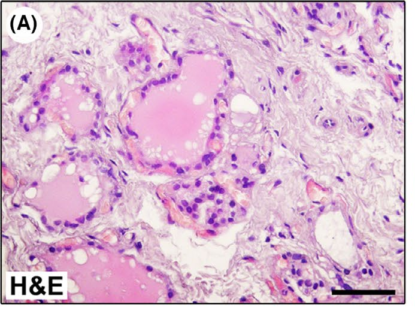

Thyroid follicular structure
A routine H&E section places colloid-containing follicular profiles, their epithelial rims and the surrounding stroma in one observed field.

Pink luminal colloid is bordered by epithelial thyrocytes. Purple nuclei help locate the rims.
The pale tissue between profiles provides context. Stromal cell subtypes are not identified here.
This value is assigned by the source caption to Panel A. The bitmap itself has no numeric scale label.
- Find the large central colloid-containing profile and follow its epithelial rim.
- Compare it with the smaller profiles and those intersecting the field edges. These are sections, not evidence that every follicle is spherical or fully contained.
- Locate the intervening stroma. The prepared appearance does not show hormone synthesis, transport or release.
The study used tissue without obvious parenchymal lesions from five adult surgical donors. The photographed donor’s identity, overall health and endocrine function are not supplied. This is a 5µm formalin-fixed, paraffin-embedded H&E section; stain colours and clear spaces belong to the prepared image, not a measurement of living follicular activity.
Rosa et al. (2022), Morphologic evidence of telocytes in human thyroid stromal tissue, Journal of Cellular and Molecular Medicine 26:2477–2481, Figure 1A · CC BY 4.0. Exact H&E panel crop from the native figure embedded in the published PDF; original labels and bar retained, with no enhancement, recolouring or added anatomical marks. Other staining panels are not reproduced.
Native/Fit changes display size only. In the enlargement, focus the image region to pan with arrow keys; Home/End reaches the corners. Escape closes and returns focus.